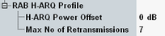

RAB H-ARQ Profile Settings
The following settings configure the RAB H-ARQ profile signaled to the UE.

RAB H-ARQ profile settings
Specifies the E-DCH MAC-d flow power offset value signaled to the UE in section "Common E-DCH MAC-d flows".
The parameter is called Δharq in 3GPP TS 25.213 and used to define HARQ-dependent gain factors for the E-DPDCH.
Option R&S CMW-KS401 is required.
Remote command:Specifies the E-DCH MAC-d flow maximum number of retransmissions signaled to the UE in section "Common E-DCH MAC-d flows".
This value indicates how often the HARQ entity in the UE can retransmit failed blocks.
Option R&S CMW-KS401 is required.
Remote command: